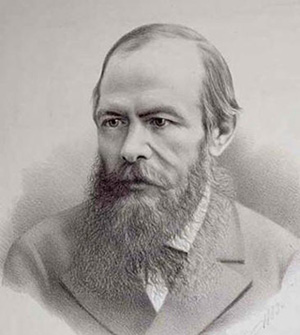

Cả tập bút kí này lẫn tác giả của nó cố nhiên chỉ là tưởng tượng. Tuy nhiên, nếu quan sát những hoàn cảnh trong đó xã hội ta được hình thành, thì mẫu người tương tự như tác giả tập bút kí này chẳng những có thể, mà còn nhất định phải có trong xã hội ta.

Tôi muốn phác họa rõ nét hơn bình thường một chút cho độc giả thấy một trong những nhân vật của thời đại vừa qua, một trong những người đại diện của thế hệ còn sống đến bây giờ. Trong phần đầu có tên gọi Dưới hầm này, nhân vật đó sẽ tự giới thiệu về mình, trình bày những quan điểm của y và dường như có ý muốn giải thích những lý do khiến y được sinh ra trong xã hội chúng ta. Còn phần hai mới chính là những hồi ức về một vài biến cố trong đời y.
Fiodor Mikhailovich Dostoievski
1864